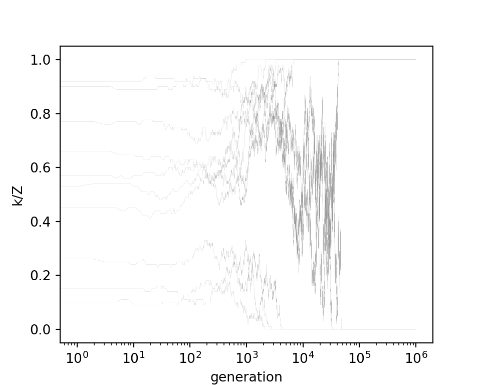

Thinking - maybe make \(b_s=0\) generally? It is percieved benefit. Maybe only in non GenAI? Maybe it’s captured in cost / benefit ratio anyway??
Also, some kind of assortment would be good to model later.
EGT modelling of cooperation in classroom with LLM
Modelling cooperation amongst peers
The model examines the relationship between peers in a learning environment providing feedback on each others work. In this model the agents are students which we will refer to as learners, and interactions are between learners choosing to provide and receive feedback from each other. We use \(P\) to indicate the learner providing feedback, and \(R\) the learner receiving feedback.
The strategy of interacting with other learners is outlined initially with a single parameter:
\(\Theta \in[0,1]\): Level of cooperative effort - that is how much effort a learner puts into providing feedback to another learner. The more effort towards cooperation the more benefit a peer receives from the feedback, and the more cost is incurred by the provider. \(\Theta_P\) indicates the collaborative effort of the learner providing the feedback, and \(\Theta_R\) the collaborative effort of the incoming feedback learner receiving the feedback.
The environment is balanced by three parameters that guide the payoffs of the different strategies:
\(c\) - Cost of cooperation
\(b_f\) - Benefit to yourself from others providing feedback / cooperating with you.
\(b_s\) - Benefit to yourself for providing others with feedback (i.e. you learn by providing feedback)
The model initially explores the scenario \(c=2,b_f=3, b_s=1\), and will generally assume that \(b_f > c\).
In this framework if a player with effort strategy \(\Theta_R\) receives feedback from someone with effort strategy \(\Theta_P\) they gain some perceived value, \(V(R|P)\) (read as value to reciever \(R\) when they meet provider \(P\)), out of sharing feedback with a peer:
So the learner gains (or at least perceives to gain) knowledge from the feedback at a level dependent on the providers effort (\(b_f\Theta_P\)), as well as from providing feedback to them depending their own effort towards cooperation (\(b_s\Theta_R\)). They incur a cost relative to the effort they put into cooperation (\(c\Theta_R\)).
Within this framework there are three strategies that agents can take that we will examine:
\(C\): Cooperation, where cooperative effort is highest, \(\Theta_C=1\)
\(T\): Token-effort, where cooperative effort is half-way, \(\Theta_T=0.5\)
\(F\): Free-rider, with no cooperative effort, \(\Theta_F=0\)
To introduce GenAI we provide two new strategy parameters, indicating the use of GenAI for providing feedback to others, or using GenAI to supplement feedback a learner receives:
\(\Pi\in\{0,1\}\): The use of GenAI to provide feedback (1) or not (0). \(\Pi_P\) indicates the choice of the provider of feedback.
\(\Gamma \in \{0,1\}\): The use of GenAI to analyse your own work (1) or not (0). \(\Gamma_R\) indicates the choice of the receiver.
Additionally, there are two new environment parameters:
\(g_q\): The quality of the GenAI for feedback.
\(g_c\): The reduced cost of providing feedback using AI.
We use two values, \(g_q=0.8\) to indicate slightly worse than what the peer would provide (with full effort), or \(g_q=1.25\) for slightly better than what you would expect from peers. We use \(g_c=0.1\) to indicate a low cost (compared to providing the feedback yourself).
This adds four new strategies of GenAI use:
\(N\): No GenAI use, \(\Pi=0,\Gamma=0\).
\(S\): Using GenAI for only your own work, \(\Pi=0,\Gamma=1\). This incurs an additional cost \(c\times g_c\), but also provides a new benefit \(b_f \times g_q\). However, this benefit cancels out any benefit of receiving feedback from someone who is using GenAI to produce the feedback. This means that when \(\Gamma_R=1\) and \(\Pi_P=1\) you can only get this benefit once.
\(O\): Using GenAI only to provide feedback for others, \(\Pi=1, \Gamma = 0\). This reduces the cost of providing feedback to \(c \times g_c\) (as \(0<g_c<1\)), but also changes the value of the feedback to \(b_f \times g_q\) instead of \(b_f \times \Theta_P\).
\(B\): Using GenAI for yourself and others, \(\Pi=1,\Gamma=1\). This combines the effects of \(S\) and \(O\).
We then combine the cooperation strategies and GenAI strategies. So \(CN\) indicates that the learner is fully cooperating but not using GenAI for themselves or for providing feedback. \(FS\) would indicate that a Free-rider (no effort towards cooperation) is using the GenAI for their own feedback. Note that the strategies \(FO\) and \(FB\) do not make sense - a Free-rider is not providing feedback for others so would not bother using GenAI for it. They might move towards \(TS\) or \(TB\) however.
The new, extended value calculation is more complicated:
It takes a bit of looking, but the above formula, for \(\Gamma_R=\Pi_R=\Pi_P=0\) this formula reduces to the non-GenAI scenario (note that \(\Gamma_P\) is irrelevant for calculating the receivers payoff). This game is instatiated in the code below:
Code
library(tidyverse)
── Attaching core tidyverse packages ──────────────────────── tidyverse 2.0.0 ──
✔ dplyr 1.1.4 ✔ readr 2.1.5
✔ forcats 1.0.0 ✔ stringr 1.5.1
✔ ggplot2 3.5.0 ✔ tibble 3.2.1
✔ lubridate 1.9.3 ✔ tidyr 1.3.1
✔ purrr 1.0.2
── Conflicts ────────────────────────────────────────── tidyverse_conflicts() ──
✖ dplyr::filter() masks stats::filter()
✖ dplyr::lag() masks stats::lag()
ℹ Use the conflicted package (<http://conflicted.r-lib.org/>) to force all conflicts to become errors
Comparing Free-rider, Token (half effort) and Cooperator.
Initially with \(c=2,b_f=2,b_s=1\), and critically \(c>b_s\). This results in uncooperative behaviour.
Comparing just \(FN\) and \(CN\) (i.e. Hawk-Dove)
Code
# Model params p =list(c =2, # costb_f =3, # receive benefitb_s =1, # self benefitg_q =0.8, # LLM is 0.8 of decent feedbackg_c =0.1# reduces cost of giving fb by this, but also reduces self benefit )glimpse(p)
List of 5
$ c : num 2
$ b_f: num 3
$ b_s: num 1
$ g_q: num 0.8
$ g_c: num 0.1
import numpy as npimport egttools as egtimport matplotlib.pyplot as pltfrom egttools.analytical import PairwiseComparisonfrom egttools.games import Matrix2PlayerGameHolderA = np.array(r.payoffs_M)game = egt.games.NormalFormGame(1, A)Z =100x = np.arange(0, Z+1)/Zevolver = egt.numerical.PairwiseComparisonNumerical(Z, game, 1000000)init_states = np.random.randint(0, Z+1, size=10, dtype=np.uint64)output = []for i inrange(10): output.append(evolver.run(int(1e6), 1, 1e-3, [init_states[i], Z - init_states[i]]))# Plot each year's time series in its own facetfig, ax = plt.subplots(figsize=(5, 4))for run in output: ax.plot(run[:, 0]/Z, color='gray', linewidth=.1, alpha=0.6) ax.set_ylabel('k/Z')ax.set_xlabel('generation')ax.set_xscale('log')

Code
import numpy as npimport egttools as egtimport matplotlib.pyplot as pltfrom egttools.analytical import PairwiseComparisonfrom egttools.games import Matrix2PlayerGameHolderA = np.array(r.payoffs_M)game = egt.games.NormalFormGame(1, A)Z =100x = np.arange(0, Z+1)/Zevolver = egt.numerical.PairwiseComparisonNumerical(Z, game, 1000000)Z =100x = np.arange(0, Z+1)/Zevolver.pop_size = Zdist = evolver.estimate_stationary_distribution(10, int(1e6), int(1e3), 1, 1e-3)# We need to reverse, since in this case we are starting from the case# where the number of Haws is 100%, because of how we map statesfig, ax = plt.subplots(figsize=(5, 4))fig.patch.set_facecolor('white')lines = ax.plot(x, list(reversed(dist)))plt.setp(lines, linewidth=2.0)